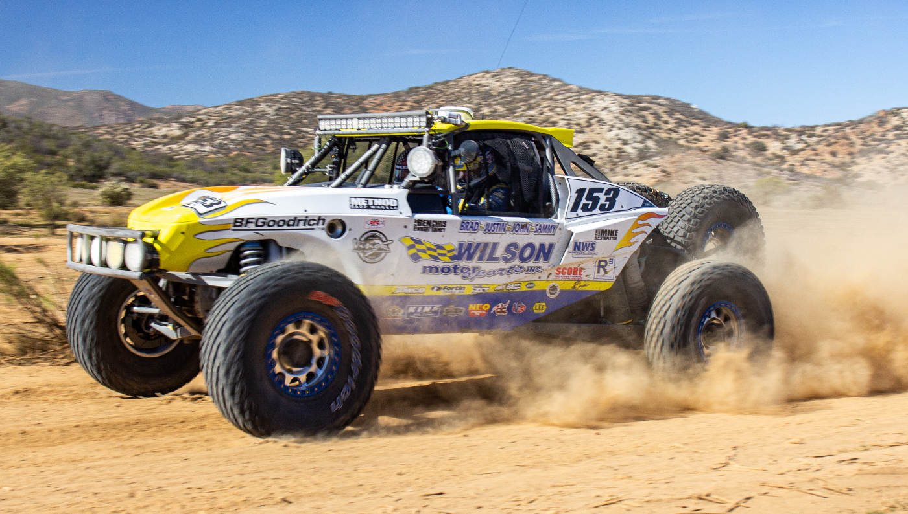

🏁 Pedro Biamor domina a Etapa 1 com 78 pontos!🚗 Can-am Maverick R lidera as principais categorias.🏆 Helena Dayama vence na categoria UTV Feminino.📅 Próxima etapa do UTV Rally Cup em breve...

O rally Baja pelo formato FIA é um rally com veículos Off-Road que repete trechos com quilometragem média em relação a rallys mais longos de raid, como o Dakar Rally e o Rally dos Sertões.